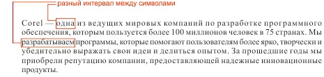
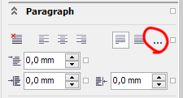

Как настроить максимальный отступ между символами X6?
stlilator / 29.01.2013, 18:08
Форум:
Версия программы:
16.2.0.998 (sp2+hf1)
Подскажите, как настроить в x6 максимальный отступ между символами при выравнивании по ширине. А то получается, что на каждой новой строке интервал между символами разный, а мне надо чтоб он был постоянными, а между словами пусть уже "гуляет" как хочет :) 
Профессиональная работа с текстом (1 часть)
Профессиональная работа с текстом (2 часть)
А лучше сначала пользоваться поиском.
Немного от себя. копируешь текст, вставляешь в блокнот и обратно в Corel.
Обе темы читал. Не нашел ничего подходящего. Текстовый докер для x5 ставил, но нужная мне функция межсимвольного интервала не работает. А копирование через блокнот я всегда делаю, но оно удаляет форматирование (шрифт, размер шрифта), а с межсимвольным переносом оно ничего не делает.
В Х6 нужная настройка есть в докерах Свойства текст и Свойства объекта:

Sancho, спасибо за наводку. Только что, сам на него наткнулся. Укрутил максимальный интервал между символами до минимума - стало лучше, но все равно разница между межсимвольными интервалами в разных строчках имеется. Теперь уже не так сильно но все же.